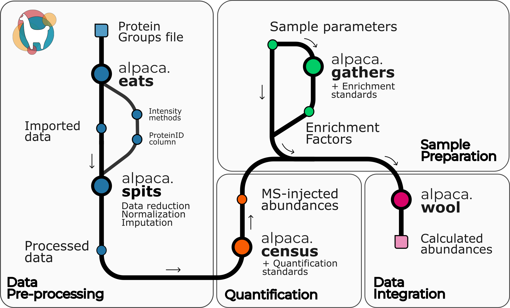

📊 alpaca_proteomics: A Python-based Proteomics Pipeline for absolute protein quantification

alpaca_proteomics is a Python-based pipeline designed for Absolute Protein Quantification in proteomics research. It streamlines the analysis of mass spectrometry data, enabling accurate determination of protein abundances in complex biological samples. By supporting various proteomics data formats and employing robust statistical methods, it enhances the reliability of quantitative analyses.
🧑🔬 Key Features
1. Data Import and Pre-processing
The pipeline facilitates the import and pre-processing of raw experimental data, transforming it into a clean, standardized format suitable for downstream analysis.
2. Quantification
It offers functionalities for absolute protein quantification, allowing researchers to determine protein abundances accurately.
3. Graphical User Interface (GUI)
For user-friendly interaction, a GUI is available, providing an intuitive interface for data analysis tasks.
🛠️ Installation
To get started, you can install the library via pip: